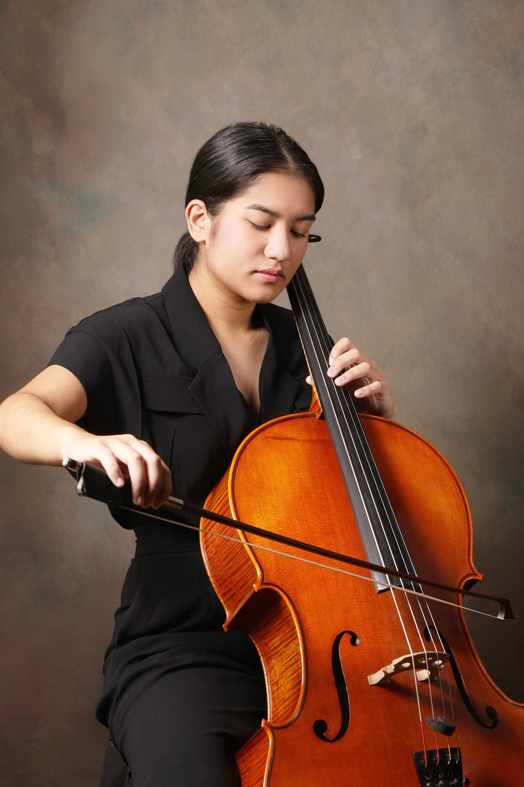

Sophia Ner is a third-year Materials Engineering student at the University of British Columbia with a passion for both engineering and music.
Sophia Ner is a third-year Materials Engineering student at the University of British Columbia with a passion for both engineering and music.
I’m interested in how materials can be designed and tested to solve real-world problems, and I enjoy exploring these ideas through hands-on projects and programming. Outside of engineering, I’m a cellist who has performed with orchestras and chamber ensembles across Vancouver. I love that both engineering and music combine creativity, precision, and problem-solving in very different ways.
This website is a collection of my projects, experiences, and interests. From materials engineering and coding to music and everything in between!
